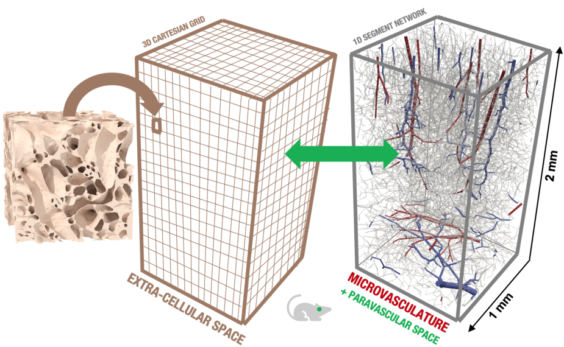

2020-2023 “Advanced in-silico transport models for vascularized tissues with focus on the brain” (Scientia Fellows II)

Perfusion magnetic resonance imaging is a time-resolved fast imaging technique based on the evaluation of how a contrast agent (CA) injected in the blood stream perfuses biological tissue (e.g. brain tissue). It is essential in the clinical workup of neurodegenerative and inflammatory diseases of the central nervous system (e.g. Alzheimer’s, multiple sclerosis) and brain cancer. It typically features a spatial resolution of millimetres and a temporal resolution of seconds (voxel scale). However, the fluid-mechanical and electro-magnetic processes responsible for creating the signal occur on smaller characteristic spatial and temporal scales (micrometres, milliseconds and smaller; sub-voxel scale). Within the size of one image voxel, we may find several ten thousands of small blood vessels forming dense and hierarchical networks (the microcirculation). A fundamental understanding of CA transport characteristics in and around microvascular networks is crucial to interpret clinical imaging data. A key process is the leakage of CA into the extra-vascular space as it happens, for example, for brain tumours or multiple sclerosis lesions where the blood-brain-barrier is impaired. The main idea of the proposed project is to develop and use computer models to advance the understanding of how the transport processes in vascularized tissue on the sub-voxel scale affect transport patterns observed on the voxel scale. The proposed numerical simulation framework explicitly incorporates microvascular network data. These simulations will allow to infer process and functional parameters from MRI data that are currently unavailable.
Main collaborator (host) is Kent-André Mardal, Department of Mathematics, UiO.
This project is funded by the European Union’s Horizon 2020 Research and Innovation programme under the Marie Skłodowska-Curie Actions Grant agreement No 801133 (Scientia fellows II).